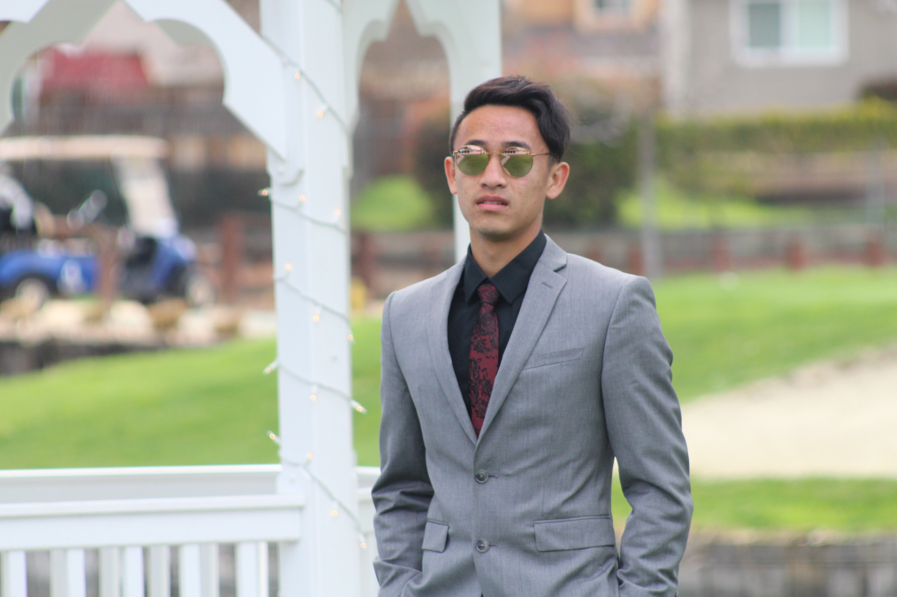

Have you ever had a dream as a child that you still have now? Honestly, most people do not but I do. My name is Vincent Truong, I am currently a Senior at Dublin High School. As a child I have always had a burning passion for helping others, whether it be something big or small. The act itself made me happy because I was making the world a little bit better, one helpful act at a time. Seeing others happy made me happy, which was my biggest motivation to help others. The passion finally reached its peak when I went on a volunteering trip to a Open Heart Kitchen in Pleasanon, CA which is an organization who give food to the homeless or those in need. I saw all sorts of reactions from the homeless and the needy people, some were happy but some were not. It baffled me why they would not be happy, but I never asked until recently when I thought back to it and realized why. These people would be there for months maybe years, and not improve. Which has lead me to biggest mission in life, create a non-profit organization that helps people in need. An organization that provides food, and clothing. The biggest thing about this organization is that at least 75% of the employees will actually be people at the shelter, so that they can gain some sort of income and build a foundation from there.
To achieve all of this, I learned the need for communication skills. So I practiced my communication skills however possible. I spoke to my teachers and counselors whenever there was something wrong and even peers when there was a problem, always facing things head on and talking through any and all issues there were. Another skill needed was organization, this skill was easy because it was second nature to me. Organization is not only a skill, but a lifestyle to me. Anything that I can organize, I will because this is how my mom raised me, to keep organized no matter what. While these skills are important, peronsality is also very important to their career goal. I believe mine fit pretty well. I was raised to be very patient because my mom would always call on me to help her, but she would be busy with something else so I would have to just wait until she is ready. Though it is weird I learned that no matter how long someone takes, there is no point in getting frustrated because in the end, it will not speed them up. I learned to be compassionate due to the peculiar situation I was in at a young age. My best friend who has a not so good life at home, was always sad and down in the dumps. They felt as if the whole world was against them, but I felt as if I could make the change in their life. I felt compassion and worked with them through everything, because I felt that no individual deserved to feel alone and abandoned.
In high school I was able to really put my communication skills into play. I joined many clubs such as Key Club and Interact which was all clubs founded on the purpose of community service, improving the community for the better. Starting from a nobody, I rose myself to the a position of leadership and from there I learned and practiced many leadership skills that I learned or already had. Communication, patience, compromising, organization, and most importantly listening. I was able to see how I fit in a leadership position and I absolutely loved it. Aside from clubs I also participated in Track and Field, which is a highly demanding sport. I learned commitment and perseverance through this because once I started something, there was no way I could stop, no matter how much it hurt or how hard it was. You could not just give up, because everything was for the moment you cross the finish line with a gold medal around your neck.
All in all, my main goal has been the same since I could remember. Helping others in need and making the world a better place, one smile at a time. Though I am young and the goal is no easy feat, I learned many things along the rocky road called life and will continue to do so. Thank you for your time, if you want to know more about me and my mission I encourage you to read on and maybe you will be inspired!